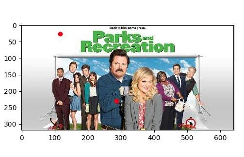
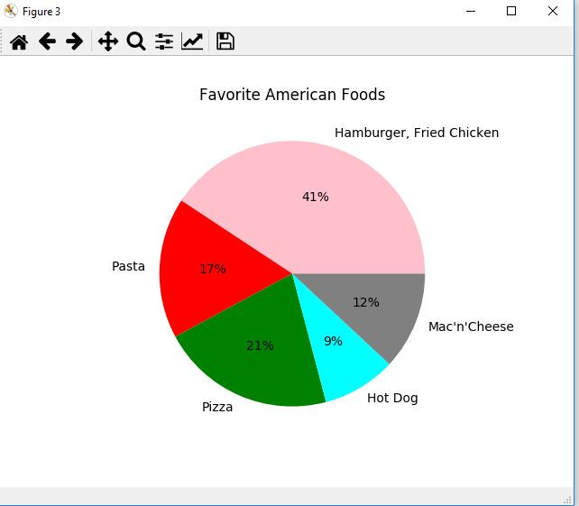
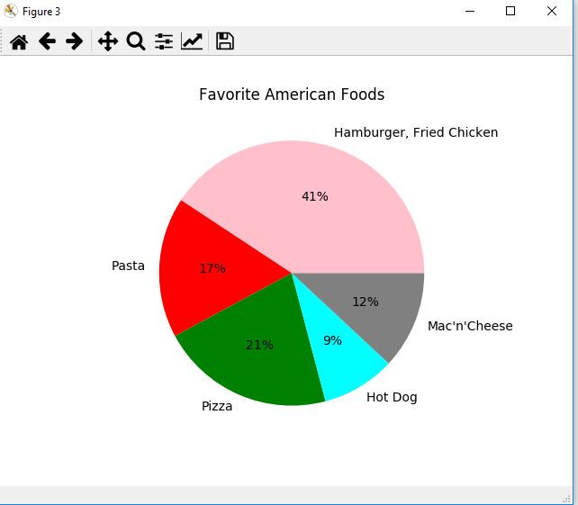

My Portfolio
Our Scratch project was a two player game that consisted of two sprites attempting to reach a candle to complete their date.
Our app functions as music player that can play certain musics while lowering the volume. For the most part our app worked, however, we were unable to get the volume button to completely work. We could make our product better by fixing this volume button and possibly adding more songs. In order to put this app on the store, we would need to garner more songs that appeal to a wider audience.
Our interactive fiction tells the story of an Egyptian king and his attempts to save his country. However, in the end, every ending we made to the game ends in a tragedy for the king.

For our Python project we edited an image of the Parks and Rec sitcom. We changed the colors to appear to make the characters older and we edited the picture to place red dots on them.
 

For out data project we decided to answer the question of what the most popular typical American dinner was. We got our data from sources online that talked about eating habits and constructed a piechart out of this. For our piechart, we got our template off of the PLTW matplot.lib bar chart. We then edited the data values with accordance to our own data values.
For our net logo simulation we took a simulation of shapes that create a sunflower and modified it. We modified the code so that we changed the shape from triangles to circles and pentagons. We also changed the step size and increment to make a larger radius for the sunflower.